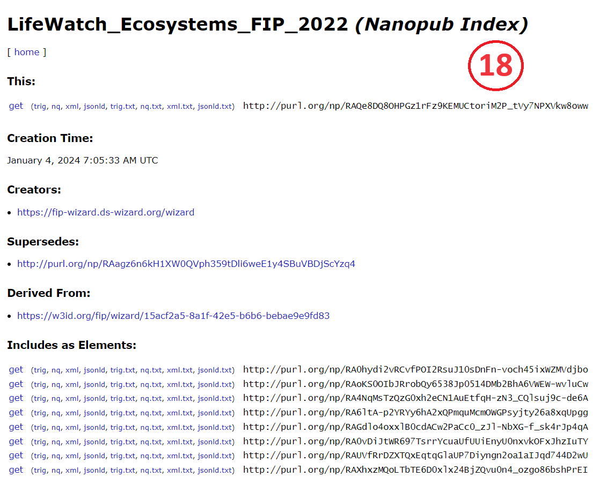
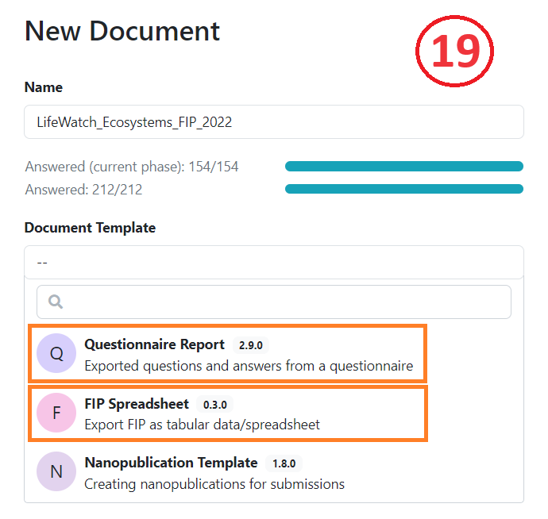
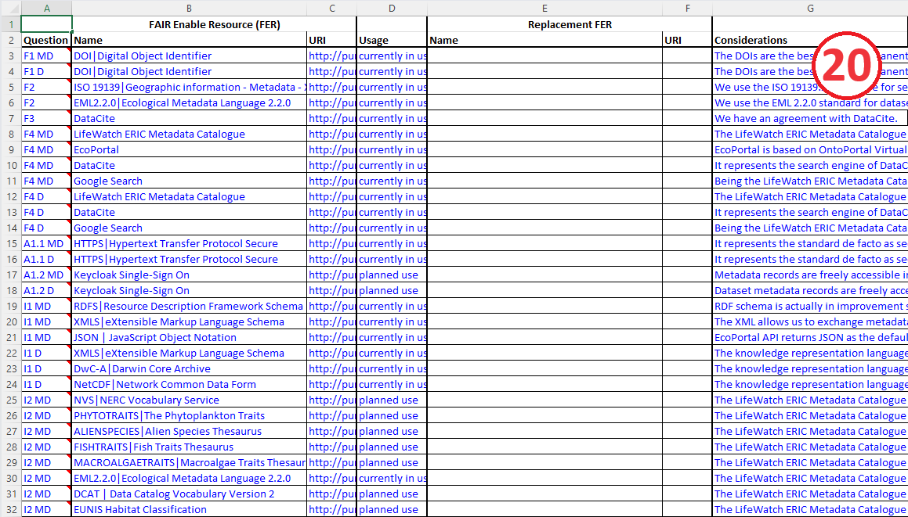
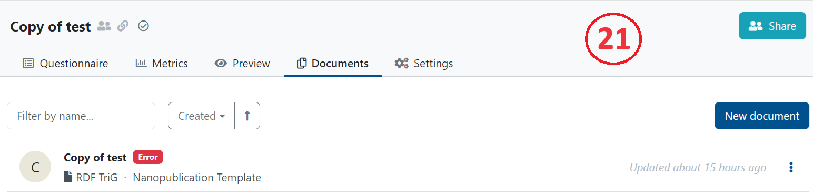
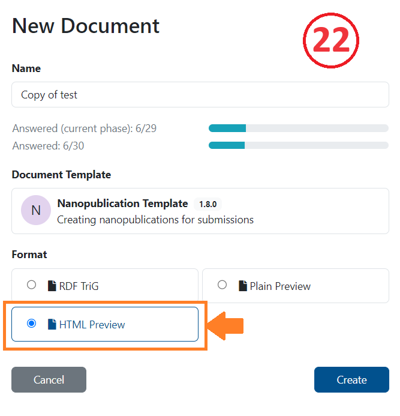
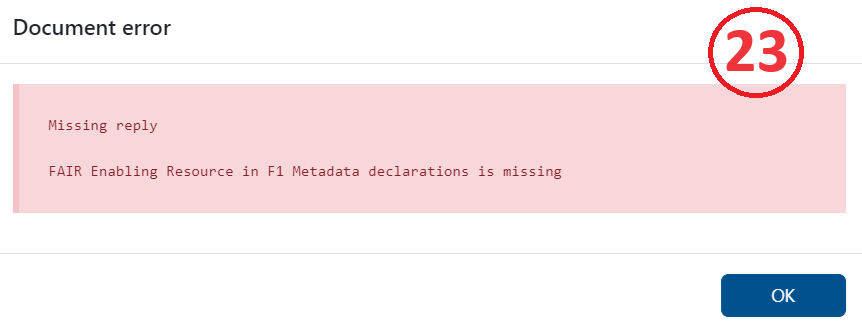
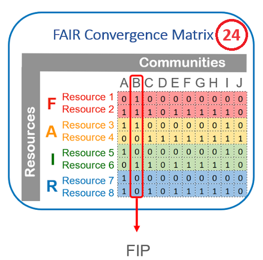

Publishing your FIP
Your completed FIP questionnaire should include:
Your community nanopub,
The ORCID for the community data steward,
All questions completed.
To publish your FIP follow these steps:
Click Documents (top menu bar).
Click New Document (blue button, right side of upper menu bar).
Be sure to set Nanopublication Template and RDF TriG to get a machine-readable output.
Click Create.
If no error appears you can submit the FIP by clicking on the three dots.
Choose Nanopub Server.
Click on view submission.
You will see the created FIP index nanopub (18)

If you want to get a human-readable output (19) you could choose as document template:
I. Questionnaire Report which gives you the options to create PDFs or Word documents
II. FIP Spreadsheet to get CSV or Excel files (20)


If an error appears (21), you should be aware that all questions must have explicit answers: Some questions may have null answers, i.e., declarations that no choice was made.

By choosing HTML Preview of the Nanopublication Template (in Settings - 22) you can see in Preview mode the question that needs revision (23).


Error messages can flag possible issues such as:
Missing FAIR Implementation Community
Missing or wrong style of ORCID
Missing answer
Wrong answer (providing text instead of a nanopublication)
For some question(s), you did not select a resource
For some question(s), you did not select the replacement resource (when option b is selected)
For some question(s), the considerations field was left empty
All the nanopublications representing your FIP - i.e., the FIC, the many FERs, and the index nanopub (indeed, all the semantic triples) - will be stored in a dedicated triple store and are available via a SPARQL endpoint. To get a matrix of all created FIPs, called FIP Matrix (24) download the new_matrix.csv.
